Chapter 22 Disentangle Mixture Distributions and Instrumental Variable Inequalities
The IV model in Chapter 21 imposes Assumptions 21.1–21.3:
- 1.
 ;
; - 2.
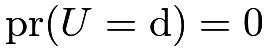
; - 3.
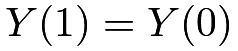
for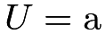
or n.
Table 9 summarizes the observed groups and the corresponding latent groups under the monotonicity assumption.
 |
 |
 |
latent groups |
|---|---|---|---|
 |
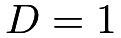 |
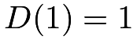 |
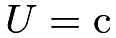 or a |
|
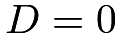 |
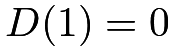 |
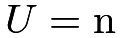 |
 |
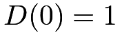 |
||
|
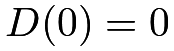 |
or n |
Interestingly, Assumptions 21.1–21.3 together have some testable implications. Balke and Pearl, (1997) called them the instrumental variable inequalities. This chapter will give an intuitive derivation of a special case of these inequalities. The proof is a direct consequence of identifying the means of the potential outcomes for all latent groups defined by  .
.
110 Disentangle Mixture Distributions
We summarize the main results in Theorem 22.1 below. Define
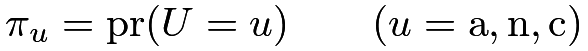 |
as the proportion of type
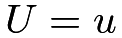
, and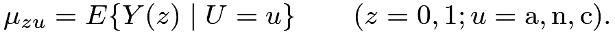 |
as the mean of the potential outcome
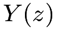
for type . Exclusion restriction implies that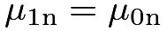
and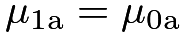
. Let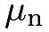
and denote them, respectively.
denote them, respectively.
Theorem 22.1


Proof of Theorem 22.1: Part I: We first identify the proportions of the latent compliance types. We can identify the proportion of the never takers by
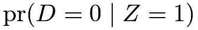 |
 |
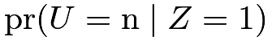 |
||
|
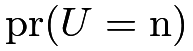 |
|||
|
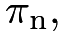 |
and the proportion of the always takers by
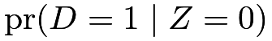 |
|
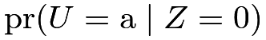 |
||
|
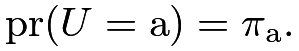 |
Therefore, the proportion of compliers is
|
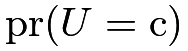 |
|||
|
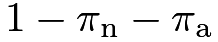 |
|||
|
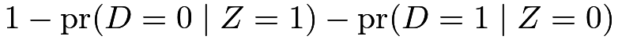 |
|||
|
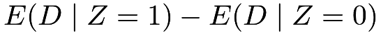 |
|||
|
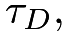 |
which is coherent with our previous discussion. Although we do not know individual latent compliance types for all units, we can identify the proportions of never-takers, always-takers, and compliers.
Part II: We then identify the means of the potential outcomes within latent compliance types. The observed group
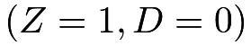
only has never takers, so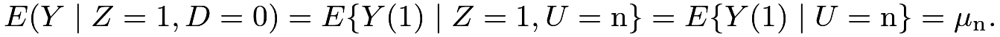 |
The observed group
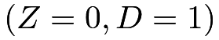
only has always takers, so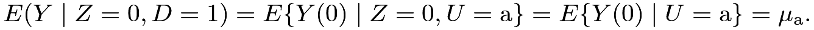 |
The observed group
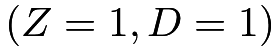
has both compliers and always takers, so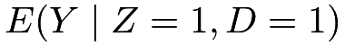 |
|
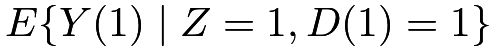 |
||
|
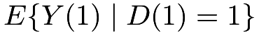 |
|||
|
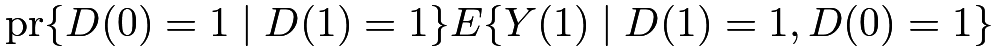 |
|||
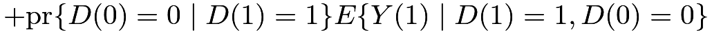 |
||||
|
Solve the linear equation above to obtain
 |
|
|||
|
||||
|
The observed group has both compliers and never takers, so
|
||||
|
||||
|
||||
|
Solve the linear equation above to obtain
 |
|
|||
|
||||
|

Based on the formulas of and in Theorem 22.1, we can simplify as
which is the same as the formula in Theorem 21.1 before.
Theorem 22.1 focuses on identifying the means of the potential outcomes, . Imbens and Rubin, (1997) derived more general identification formulas for the distribution of the potential outcomes; I leave the details to Problem 22.3.
111 Testable implications: Instrumental Variable Inequalities
Is there any additional value of the detour to derive the formula of  through Theorem 22.1? The answer is yes. For binary outcome, the following inequalities must be true:
through Theorem 22.1? The answer is yes. For binary outcome, the following inequalities must be true:
which implies four inequalities
 |
||||
 |
||||
|
||||
|
Rearranging terms, we obtain the following unified inequalities.
Theorem 22.2 (Instrumental Variable Inequalities)
Under the IV assumptions 21.1–21.3, the difference in means for and must all be non-negative. Importantly, these implications only involve the distribution of the observed variables. Rejection of the IV inequalities leads to rejection of the IV assumptions.
Balke and Pearl, (1997) derived more general IV inequalities with and without assuming monotonicity. The proving strategy above is due to Jiang and Ding, (2020) for a slightly more complex setting. Theorem 22.2 states the testable implications only for a binary outcome. Problem 22.4 gives an equivalent form, and Problem 22.5 gives the result for a general outcome.
112 Examples
For a binary outcome, we can estimate all the parameters by the method of moments below.
We then re-visit two canonical examples with binary data.
Example 22.1
Investigators et al., (2014) assess the effectiveness of the emergency endovascular versus the open surgical repair strategies for patients with a clinical diagnosis of ruptured aortic aneurism. Patients are randomized to either the emergency endovascular or the open repair strategy. The primary outcome is the survival status after 30 days. Let be the treatment assigned, with for the endovascular strategy and for the open repair. Let be the treatment received.
Let  be the survival status, with
be the survival status, with  for dead, and
for dead, and  for alive. Table 10(a) summarizes the observed data.
Using the IVbinary function above, we can obtain the following estimates:
for alive. Table 10(a) summarizes the observed data.
Using the IVbinary function above, we can obtain the following estimates:
There is no evidence of violating the IV assumptions.
Example 22.2
In Hirano et al., (2000), physicians are randomly selected to receive a letter encouraging them to inoculate patients at risk for flu. The treatment is the actual flu shot, and the outcome is an indicator of flu-related hospital visits. However, some patients do not comply with their assignments. Let  be the indicator of encouragement to receive the flu shot, with if the physician receives the encouragement letter, and otherwise. Let be the treatment received.
Let be the outcome, with if for a flu-related hospitalization during the winter, and otherwise. See Problem 21.7 for more details of the data. Table 10(b) summarizes the observed data.
Using the IVbinary function above, we can obtain the following estimates:
be the indicator of encouragement to receive the flu shot, with if the physician receives the encouragement letter, and otherwise. Let be the treatment received.
Let be the outcome, with if for a flu-related hospitalization during the winter, and otherwise. See Problem 21.7 for more details of the data. Table 10(b) summarizes the observed data.
Using the IVbinary function above, we can obtain the following estimates:
Since , there is evidence of violating the IV assumptions.
|
| ||||
|---|---|---|---|---|---|
|
107 | 68 | 24 | 131 | |
|
42 | 42 | 8 | 79 | |
|
| ||||
|---|---|---|---|---|---|
|
31 | 85 | 30 | 99 | |
|
424 | 944 | 237 | 1041 | |
113 Homework problems
22.1 More detailed data analysis
22.2 Risk ratio for compliers
With a binary outcome, we can define the risk ratio for compliers as
Remark: Using Theorem 22.1, we can identify any comparisons between and .
22.3 Disentangle the mixtures: distributional results
This problem extends Theorem 22.1. Define
as the density of for latent stratum , and define
as the density of the outcome within the observed group .
Exclusion restriction implies that and . Let  and denote them, respectively.
and denote them, respectively.
Prove Theorem 22.3 below.

22.4 Alternative form of Theorem 22.2
22.5 IV inequalities for a general outcome
Remark: Imbens and Rubin, (1997) and Kitagawa, (2015) discussed similar results. We can test the first inequality based on an analog of the Kolmogorov–Smirnov statistic:
22.6 Example for the IV inequalities
Give an example in which all the IV inequalities hold and another example in which not all the IV inequalities hold. You need to specify the joint distribution of with binary variables.
22.7 Violations of the key assumptions
Theorem 21.1 relies on randomization, monotonicity, and exclusion restriction. The latter two are not testable even in randomized experiments. When they are violated, the IV estimator no longer identifies the CACE. This problem gives two cases below, which are restatements of Propositions 2 and 3 in Angrist et al., (1996). Recall and for .
Theorem 22.4
Prove Theorem 22.4.
22.8 Problems of other analyses
In the process of deriving the IV inequalities in Section 110, we disentangled the mixture distributions by identifying the proportions of the latent strata as well as the conditional means of their potential outcomes. These results help to understand the drawbacks of other seemingly reasonable analyses. I review three estimators below and suppose Assumptions 21.1–21.3 hold.
- 1.
The as-treated analysis compares the means of the outcomes among units receiving the treatment and control, yielding
Show that
- 2.
The per-protocol analysis compares the units that comply with the treatment assigned in treatment and control groups, yielding
Show that
- 3.
We may also want to compare the outcomes among units receiving the treatment and control, conditioning on their treatment assignment, yielding
Show that they reduce to
22.9 Bounds on the average causal effect on the whole population
Extend the discussion in Section 110 based on the notation in Section 108. With the potential outcome , define the average causal effect of the treatment received on the outcome as
and modify the definition of as
due to the change of the notation. They satisfy
Section 110 identifies  , ,
, ,  , , , and . But the data do not contain any information about and . Therefore, we cannot identify . With a bounded outcome, we can bound .
, , , and . But the data do not contain any information about and . Therefore, we cannot identify . With a bounded outcome, we can bound .
Prove Theorem 22.5.
Remark: In the special case with a binary outcome, the bounds simplify to
and
22.10 One-sided noncompliance and statistical inference
Consider a randomized encouragement design where the units assigned to the control have no access to the treatment. For unit  , let be the binary treatment assigned,
, let be the binary treatment assigned,  be the binary treatment received, and
be the binary treatment received, and  be the outcome of interest. One-sided noncompliance happens when
be the outcome of interest. One-sided noncompliance happens when
Suppose that Assumption 21.1 holds.
-
[(1)]
- 1.
Does monotonicity Assumption 21.2 hold in this case? How many latent strata defined by
 are there in this problem? How do we identify their proportions by the observed data distribution?
are there in this problem? How do we identify their proportions by the observed data distribution? - 2.
State the assumption of exclusion restriction. Under exclusion restriction, show that can be identified by the observed data distributions. Give the formulas for all possible values of
 and . How do we identify the CACE in this case?
and . How do we identify the CACE in this case? - 3.
If we observe pretreatment covariates
 for all units , how do we use the covariate information to improve the estimation efficiency of the CACE?
for all units , how do we use the covariate information to improve the estimation efficiency of the CACE? - 4.
- 5.
Sommer and Zeger, (1991) provided the following dataset:
9663 2385 0 11514 12 34 0 74 The treatment assigned
is whether or not the child was assigned to the vitamin A supplement, the treatment received indicator is whether or not the child received the vitamin A supplement, and the binary outcome is the survival indicator. The original RCT was conducted in Indonesia.
Re-analyze the data.
Remark: Bloom, (1984) first discussed one-sided noncompliance and proposed the estimator  , which is sometimes called the Bloom estimator. Bloom, (1984)’s notation is different from this chapter.
, which is sometimes called the Bloom estimator. Bloom, (1984)’s notation is different from this chapter.
22.11 One-sided noncompliance with partial adherence
Sanders and Karim, (2021, Table 3) reported the following data from an RCT aiming to estimate the efficacy of smoking cessation interventions among individuals with psychotic disorders.
| group assigned | treatment received | group size | # positive outcomes |
|---|---|---|---|
| Control | None | 151 | 25 |
| Treatment | None | 35 | 7 |
| Treatment | Partial | 42 | 17 |
| Treatment | Full | 70 | 40 |
Three tiers of treatment received are defined as follows: “full” treatment corresponds to attending all  treatment sessions, “partial” corresponds to attending to sessions, and “none” corresponds to sessions. The outcome is
defined as the binary indicator of smoking reduction of or greater relative to baseline, measured at three months.
treatment sessions, “partial” corresponds to attending to sessions, and “none” corresponds to sessions. The outcome is
defined as the binary indicator of smoking reduction of or greater relative to baseline, measured at three months.
In this problem, the treatment assignment is binary but the treatment received takes three values for “none”, “partial”, and “full.” The three-leveled causes complications, but it can only be 0 under the control assignment. How many latent strata do we have in this problem? Can we identify their proportions?
How do we extend the exclusion restriction to this problem? What can be the causal effects of interest? Can we identify them?
Analyze the data based on the questions above.
22.12 Recommended reading
Balke and Pearl, (1997) derived more general IV inequalities.